Classification#
Using Piximi, you can classify your images with either a pretrained classification model you upload, or from a model you trained from scratch using Piximi. Our goal is to make classification as easy ass possibly while exposing enough settings so that you can get precise and repeatable results.
Uploaded Models
Piximi uses TensorFlowJS under the hood for all DL tasks. Any model you upload must be a TFJS Saved Model.
Overview#
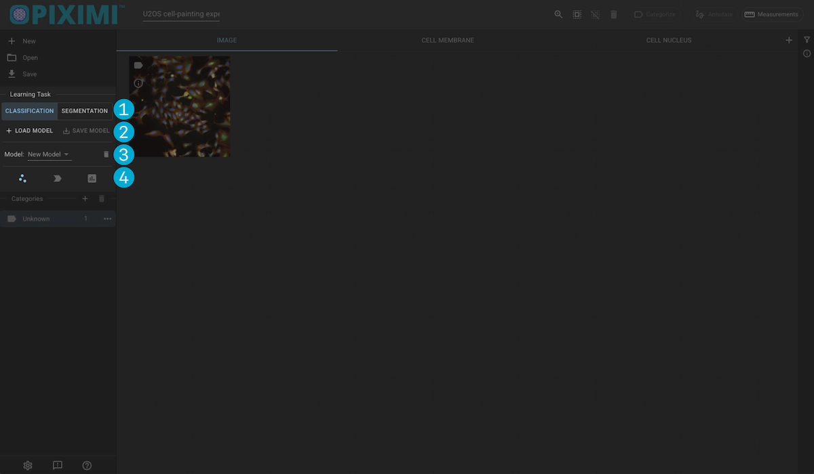
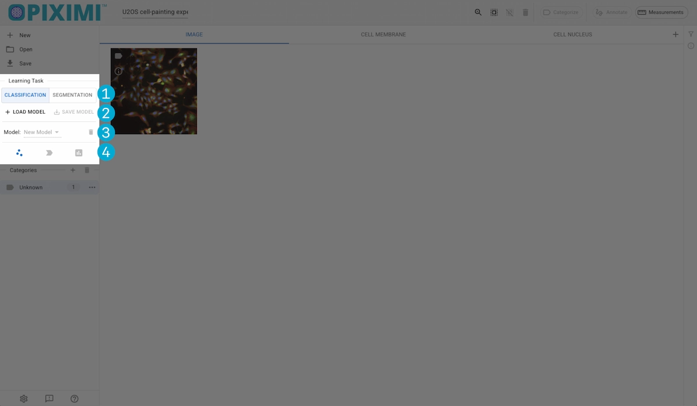
Task Selection
Model I/O
Model Selection
Model Operations
Task Selection#
Switch between classification and segmentation tasks. The tasks will operate on the currently displayed Kind.
Model I/O#
Local Model Loading#
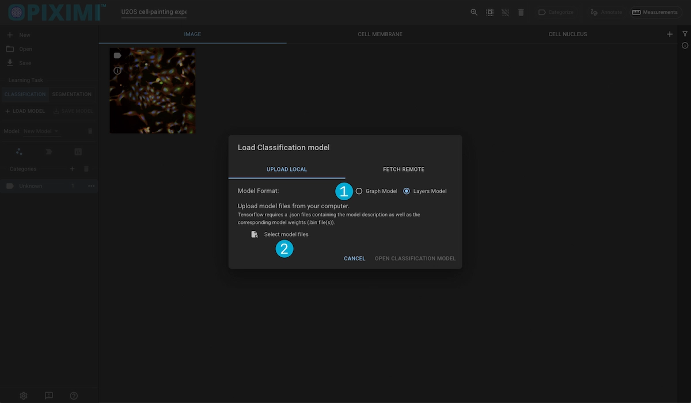
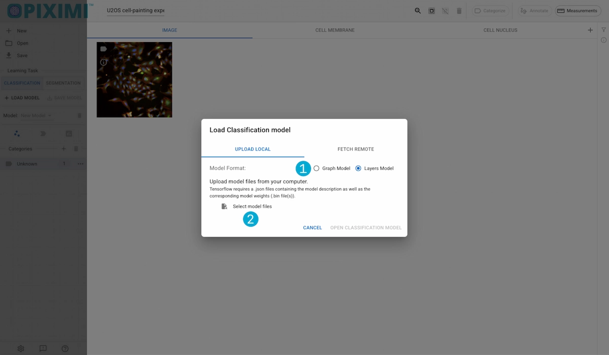
1. Model Types
Tensorflow models can have either a Layers framework or a Graph framework. We need to know which your model is in order to upload it correctly.
2. File Picker
Open a file picker and select the model files you want to upload. Piximi requires a [model].json description file as well as one or more [model].weights.bin files(s).
Onces youve confirmed the type and selected the files, click “Open Classification Model” to upload it.
Remote Model Loading#
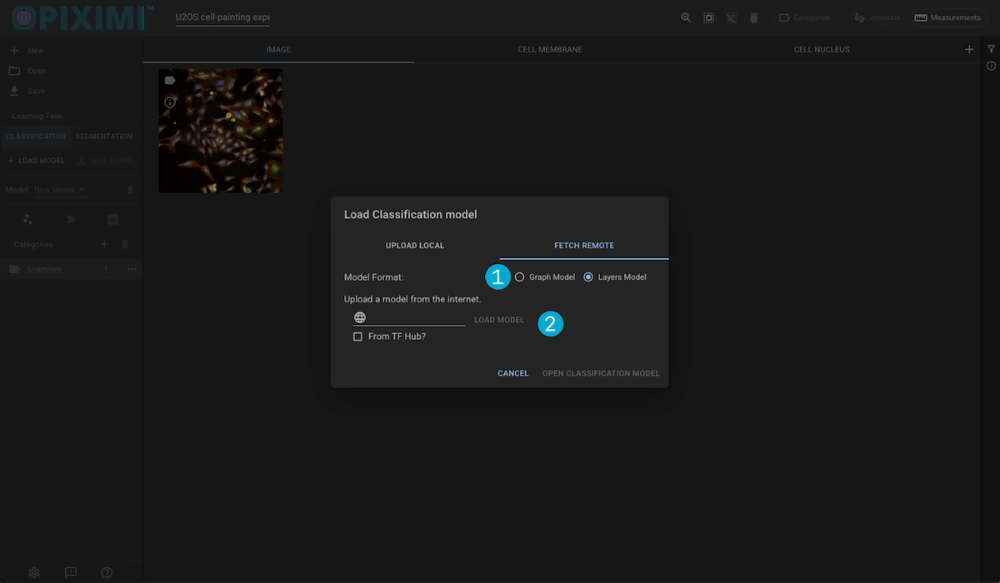
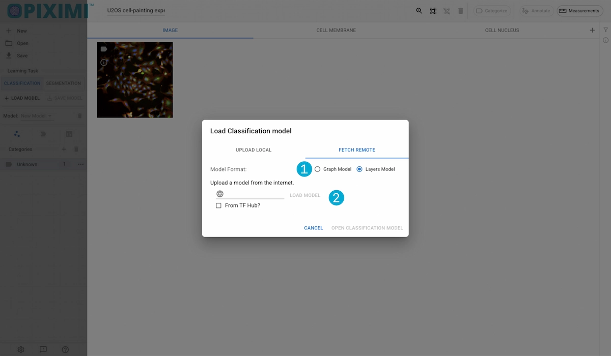
1. Model Types
Tensorflow models can have either a Layers framework or a Graph framework. We need to know which your model is in order to upload it correctly.
2. File Picker
Enter the url access point for the remote model. If the model comes from TFHub (now absorbed into Kaggle), you must check the “From TFHub” box.
Onces youve confirmed the type and selected the files, click “Open Classification Model” to upload it.
Model Operations#
Fit#
Clicking the Fit button will open up a dialog displaying the configurable model settings.
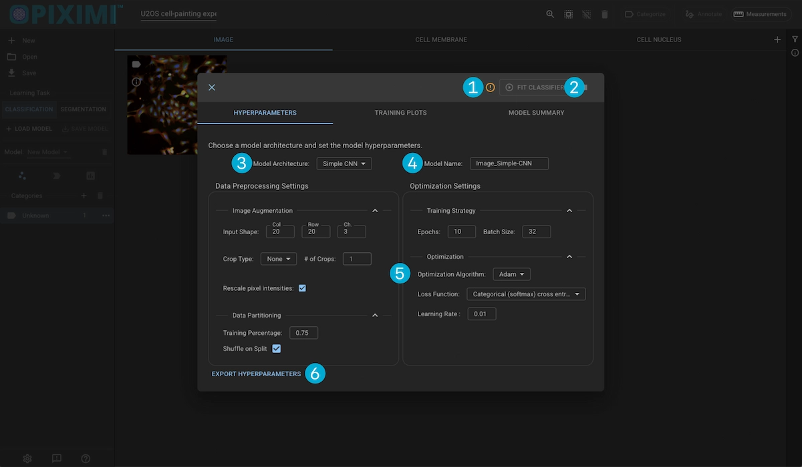
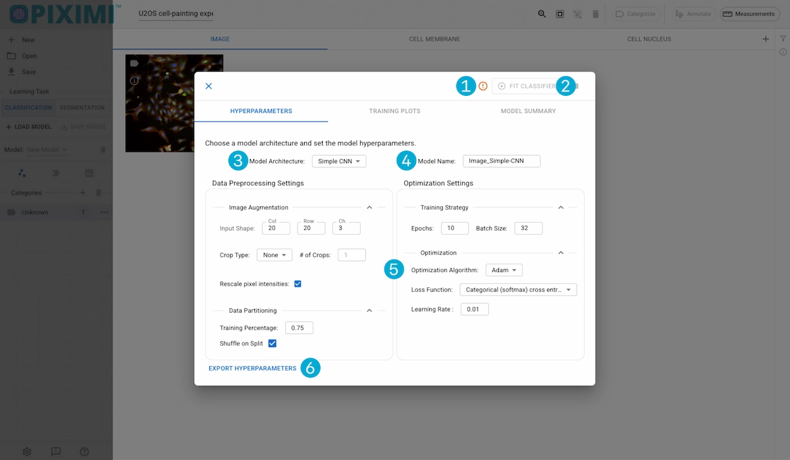
1. Error Info
This error icon will appear to alert you of any issues that are currently blocking classification. You can view the issue by hovering over the icon.
2. Fit Classifier Button
When you are ready to train the clasifier, click this. The button will be replaces with a progress indicator depicting the number of epochs completed.
Hyperparameters#
3. Model Architecture
Piximi offers training a model using two different architectures:
SimpleCNN: A simple convolutional neural-network consisting of a handful of processing layers.
MobileNet: Uses the popular MobileNet backbone for training the model.
4. Model Name
You can choose to change the name of the model before training. The name entered here will be the default filename when you save the classifier or the hyperparameters.
5. Hyperparameters
These settings control how your model learns from and infers on your data. Once a model is trained, these settings can no longer be updated in order to maintain reliability in the model.
For a detailed description of each hyperparameter and how they affect training, go to the Hyperparameters section of this documentation.
Data Processing Settings
These settings control how your data is processed prior to both their use in training and inference. These can be split into two groups of operations: Image Augmentation and Data Partitioning.
Image Augmentation: These settings control the size and shape of the images you want to feed to the model, as well as defining if or how you would like to crop them.
Data Partitioning: These settings control how your data is split between training and validation for model training purposes.
Optimization Settings
These settings dictate how the model will learn while it is being trained on your data, as well as the length of the training. It is broken up into two more sections: Training Strategy and Optimization.
Training Strategy: This section will defint how long to train, and how many images will be in each batch for training.
Optimization: This section defined how the model calculates loss, how it corrects itself, and how often it checks.
6. Export Hyperparameters
Click on the Export Hyperparameters button to download a .json file with the model’s settings.
History Plots#
Displays the model’s performance from epoch to epoch. Monitoring the training history can help identify common model fitting difficulties such as overfitting.
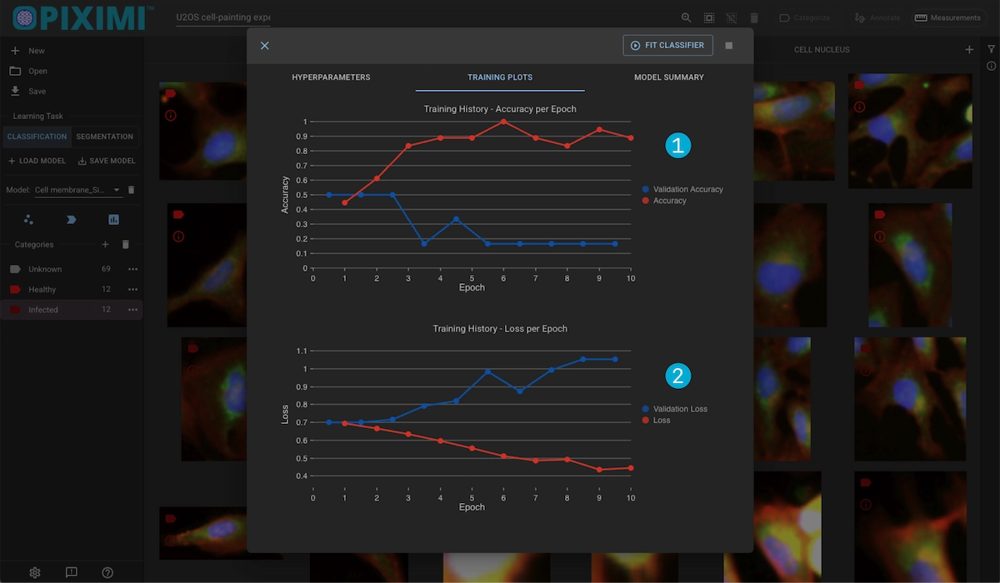
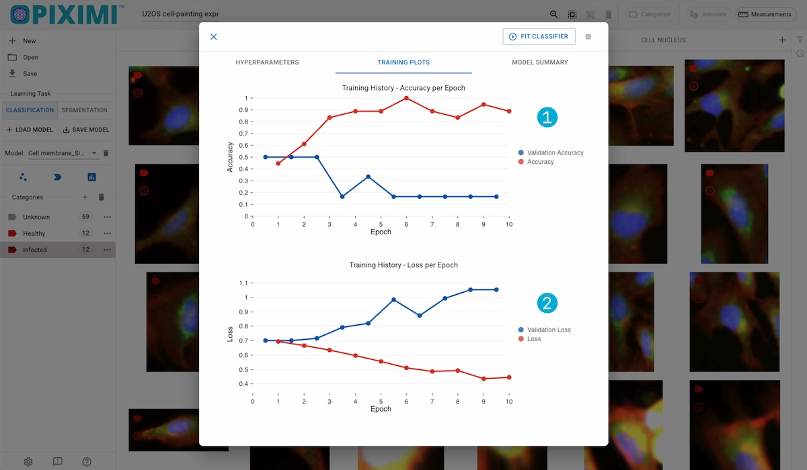
1. Accuracy Plot
This shows the change in accuracy for the training and validation sets per epoch. Generally, higher is better.
2. Loss Plots
Shows the change in training loss for the training and validation sets. Generally, lower is better.
Model Summary#
Displays the model’s summary, detailing each layer and a way to export this information.
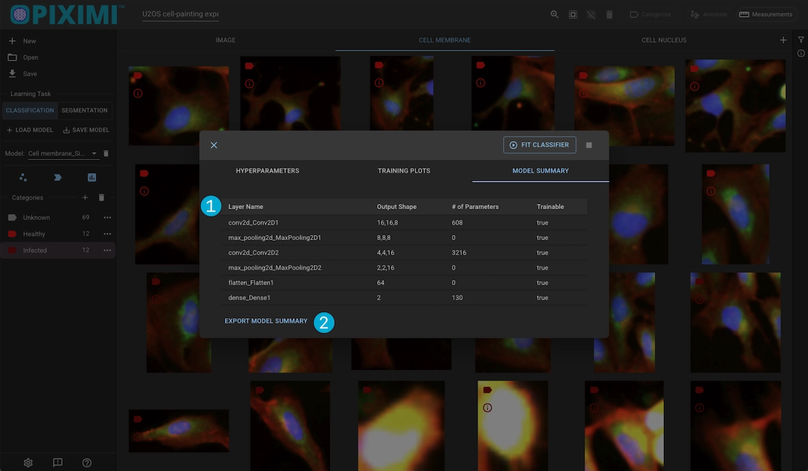
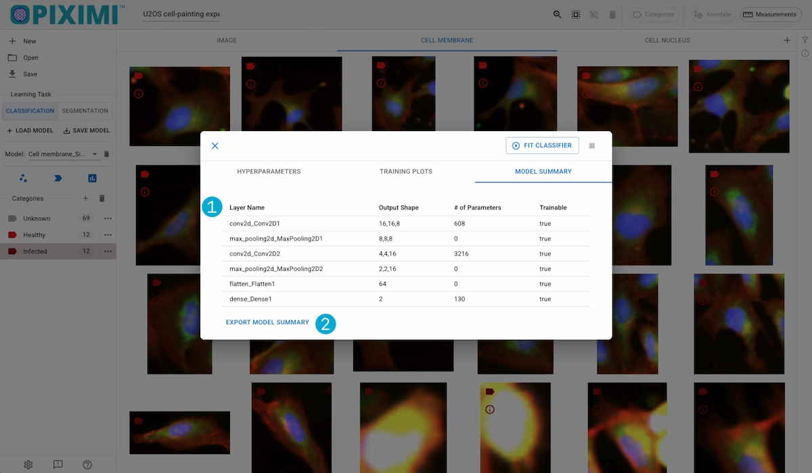
1. Summary Table
For each layer in the model, displays:
Output shape
Number of parameters
Whether its frozen (not trainable)
2. Export Summary
Exports the model summary as a .csv file.
Predict#
Clicking the Predict button will begin running inference on the images/object of the displayed Kind, using the selected model.
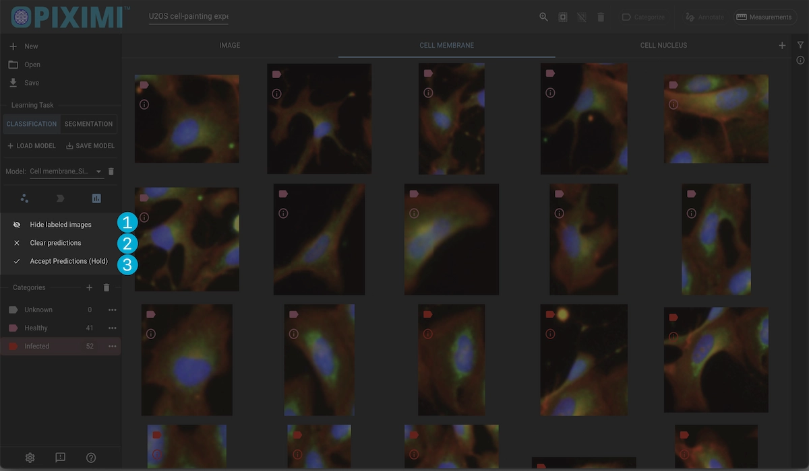
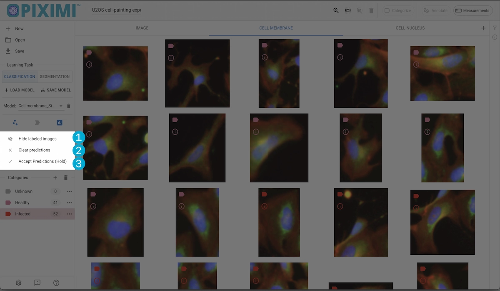
1. Hide Labeled Images
This will hid all of the manually categorized images so that you only so the predictions.
2. Clear Predictions
Reset the project to before the predition were made.
3. Accept Predictions
confirm the predicted categories. Once accepted you wont be able to revert to a state before they were categorized, so to prevent accidental acception we require users to press and hold the button.
Evaluate#
Clicking the Evaluate button will open a dialog with the evaluation result of the current run, along with the previous runs for which evaluation has been done.
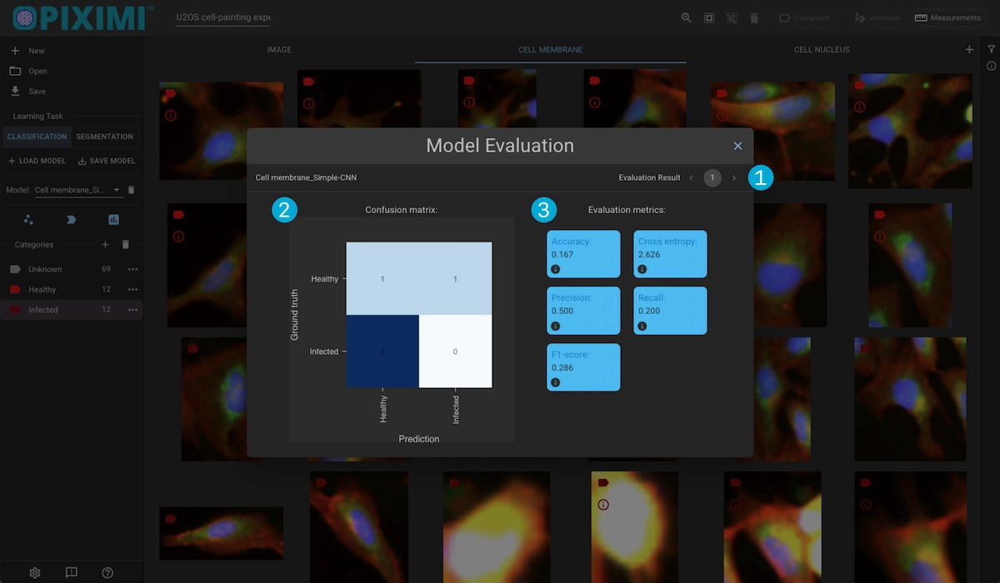
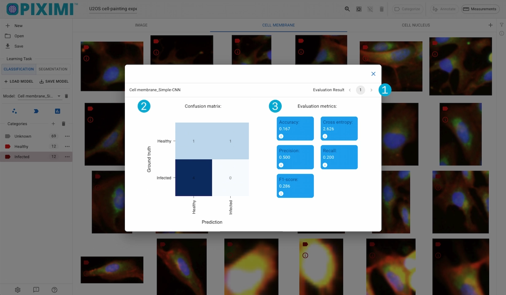
1. Select Run
View the current evaluated run, or select a previously evaluated run to view
2. Confusion Matrix
Displays the result of the valitation set predictions. Ideally you want the it to resemble an identity metrix where the values on the diagonal are maximized and the surrounding values are zero. This would meant that the model accurately predicted the classes of the inference set.
3. Evaluation Metrics
Displays some averaged evaluation metrics for the run:
Accuracy
Cross Entropy
Precision
Recall
F-1 Score
See our image classification tutorial and object classification tutorial for usage information.